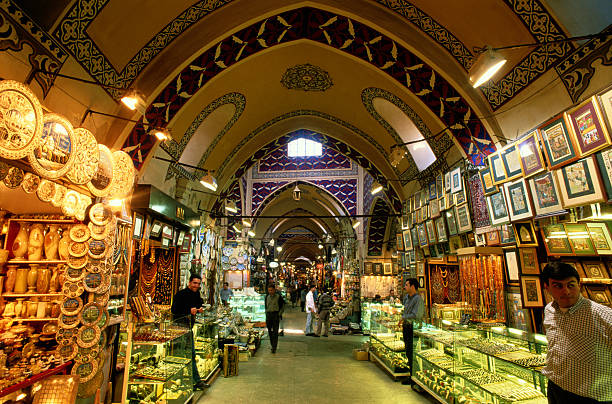
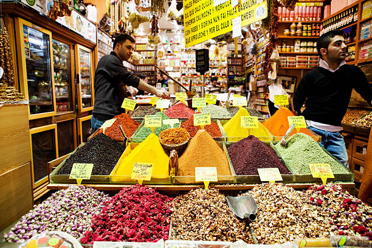

Istanbul's markets are an integral part of the city's culture and history, offering a sensory feast for visitors. The Grand Bazaar, one of the oldest and largest covered markets in the world, is famous for its diverse range of goods, from spices and textiles to jewelry and souvenirs.

The Egyptian Bazaar, also known as the Spice Bazaar, is another popular destination where the aromas of spices, dried fruits, and teas fill the air, providing a unique shopping experience that reflects Istanbul's rich trade heritage.
